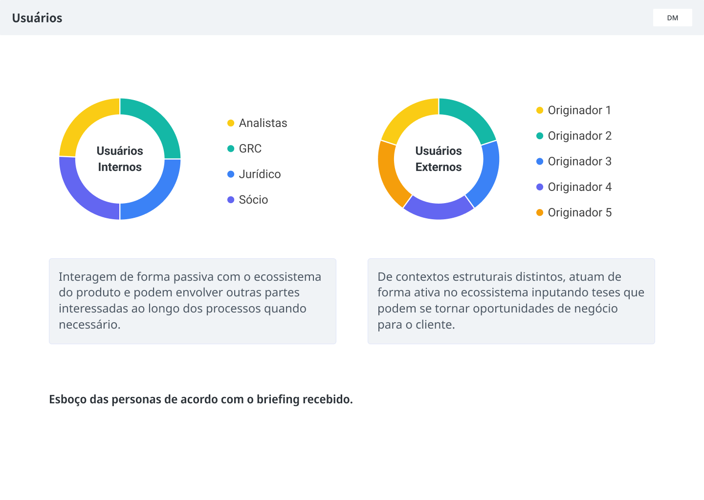
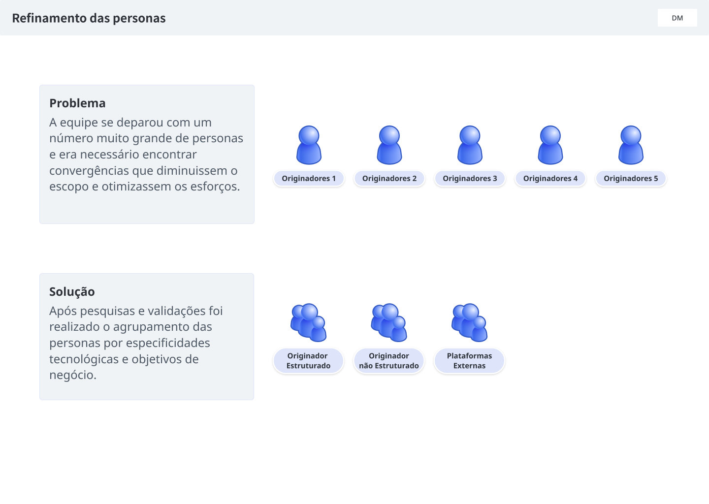
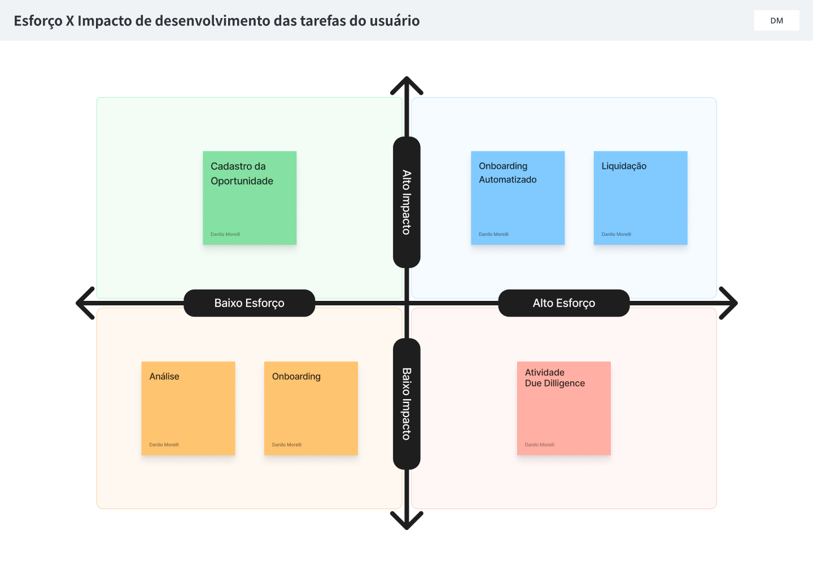
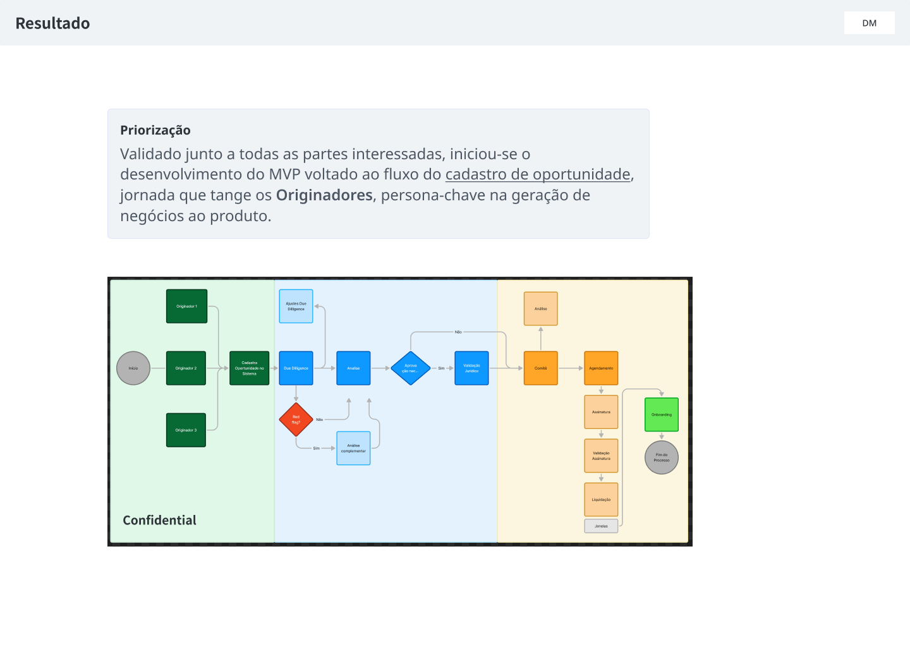

03 · Open Flow Labs
Pesquisei quem origina o negócio e o MVP virou ecossistema
Ecossistema digital de aquisição de precatórios, desenhado a partir de quem origina o negócio.
- Papel
- UX Researcher
- Período
- 2020 — 2021
- Abordagem
- Centrada no usuário, Lean
O que o ecossistema fazia
Um ecossistema para a aquisição de precatórios, os créditos que o poder público deve por decisão judicial. Em vez de cada negócio nascer solto, o produto reunia num só lugar quem traz a oportunidade e quem decide sobre ela.
O fluxo ia do cadastro da oportunidade à análise, à due diligence, ao onboarding e à liquidação.
Para quem
- Originador estruturadoJá tinha processo próprio de due diligence.
- Originador não estruturadoNão tinha esse processo e dependia de apoio nessa etapa.
- Plataformas externasEscritórios de advocacia e outros canais que traziam negócio.
- Equipe internaAnalistas, jurídico, GRC e sócios. Interagiam de forma passiva e entravam quando o processo pedia, para avaliar e validar.
O desafio
Um MVP enxuto, a partir de uma nova proposta de desenvolvimento. O originador era o agente central na geração de negócio, mas os cinco perfis levantados eram demais para um primeiro escopo. Agrupei-os em três personas, para reduzir o escopo e concentrar o esforço.
O que fiz
- Jornada do usuárioMapeamento de fluxos junto com o Product Owner.
- Validação das personasAnálise crítica das hipóteses de produto e agrupamento de cinco perfis de originador em três personas.
- PriorizaçãoMatriz de esforço por impacto, validada com as partes interessadas. O cadastro de oportunidade ficou em alto impacto e baixo esforço, e por isso o MVP nasceu em torno dele.




O resultado
Um MVP ágil e eficiente que se desdobrou em um ecossistema tecnológico, hoje oferecido na carteira de produtos do fundo de investimento que o adquiriu.